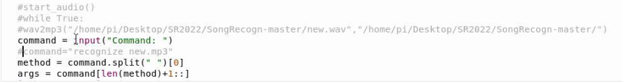
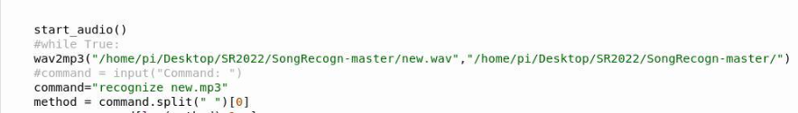

韵律识别
对于韵律识别，我们主要找到了两种处理方式。第一种是通过神经网络算法对音频信号进行训练。链接如下：参考博客（第一种方法博主提供了一个非常庞大的数据集，该算法解决的问题主要是识别环境中的不同声音，如鸟叫、汽笛、小孩打闹声等。有点类似于yolov5算法中识别环境中的人、车、房子、手机等，并不是用来进行音乐中的韵律识别。我的理解是韵律识别是音频识别中一个更小的分支，我们应该寻找一个更加精确的算法来解决问题，而不是单纯通过音频进行判断）
第二种是通过shazam算法，shazam算法主要用于听歌识曲，一般用于音乐软件识别歌曲。（这个算法的缺点在于它封装得比较好，音乐切割后都是放到数据库中，如果需要进行一些改进的话比较困难） 最后比赛我们选择的是dejavu包 这个包是模仿shazam算法进行复现的
2022年比赛韵律识别使用代码
本项目的源代码放在了博主的github中，链接如下：https://github.com/aynakeya/SongRecogn
博主放了三篇推文介绍了shazam算法，链接如下：https://www.bilibili.com/read/readlist/rl54978
创建数据库后，使用 mysql -u root -p 语句进入root，并输入密码。
而后通过 create table song; 语句创建代码所需要的 song 数据库 。
通过 use song; 语句进入‘song’ 数据库。
执行代码 create_database.py。
而后在终端通过 show tables； 语句查看表是否创建成功。
执行代码 SongRecogn.py前，将待加入歌曲‘xxx.mp3’’放到与该py文件同一路径下，注意对该段代码进行注释和更改，最终效果如下：

执行 SongRecogn.py,在command: 后输入语句“add-audio xxx.mp3”。
执行成功后在终端输入‘select * from songs；’检查是否插入歌曲成功（注意fingerprint的值为1）。
在终端输入‘select * from fingerprinted；’查看音乐指纹是否创建成功。
而后修改代码SongRecogn.py,使该段代码最终为

执行，录音，产生结果。
SQL环境配置
树莓派录音
安装相关软件
1 | sudo apt-get install ffmpeg omxplayer |
开始录音
1 | arecord -D "plughw:1,0" -d 5 test.wav |
-D的意思就是我们要选择的设备，plughw:1,0的1指的是第一个外部设备，因为树莓派内部没有声卡，所以只能使用外部的usb麦克风。
-d 5的意思是录制5秒的声音，最后保存为test.wav的文件。
播放录制声音
1 | omxplayer -o local test.wav |
No module named ‘pyaudio’
事先安装portaudio库开发包（portaudio19-dev）和python开发包（python-all-dev）。
1 | sudo apt-get install python-all-dev |
安装pyaudio
1 | pip install pyaudio |
报错error: metadata-generation-failed
类似问题pip 在安装命令中添加以下内容:
1 | –use-deprecated=backtrack-on-build-failures |
树莓派pip下载超时
给pip换源和给apt-get换源是两回事儿，你给apt-get换成了清华源，用pip下载python的包时用的其实还是国外的源，不出意外应该很多东西都会下载超时。
按顺序在树莓派命令行执行如下命令：
sudo mkdir ~/.pip
1
cd .pip
1
sudo nano pip.conf
1
在打开的文件中输入：
[global]
timeout = 10
index-url = http://mirrors.aliyun.com/pypi/simple/
extra-index-url= http://pypi.douban.com/simple/
[install]
trusted-host=
mirrors.aliyun.com
pypi.douban.com
1
2
3
4
5
6
7
8
然后crtl+o，回车保存，crtl+x退出。
参考博客
No module named mysql
使用Pydub库对MP3和wav进行格式互转
pydub是python的高级一个音频处理库，可以让你以一种不那么蠢的方法处理音频。
1 | # libav |
如果对于libav支持不好的话 建议使用ffmpeg
代码封装如下
1 | from pydub import AudioSegment |